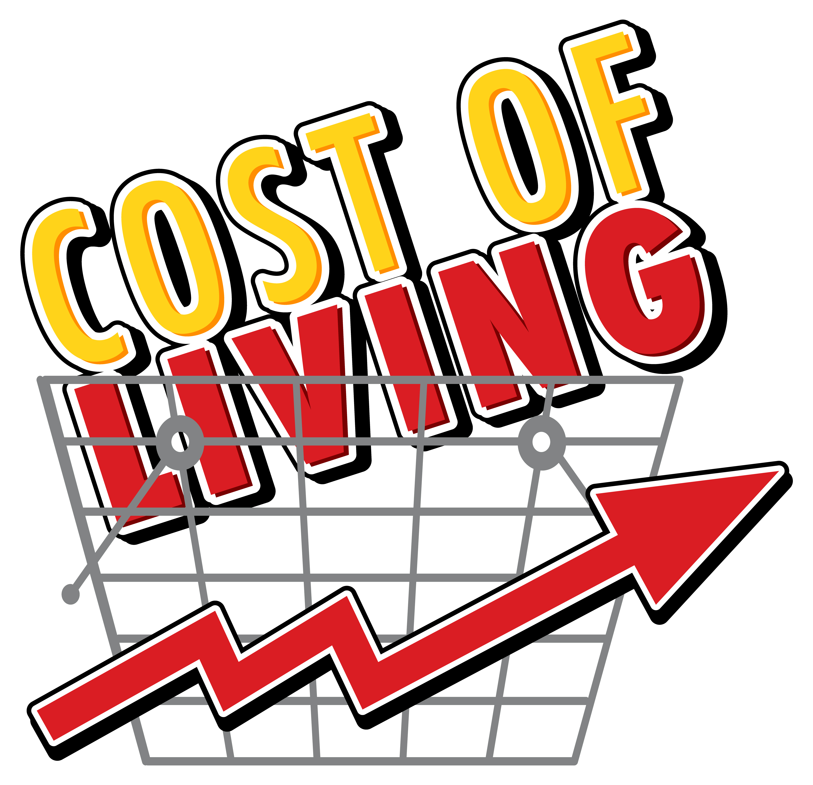

Factors

Low levels of skills or education
Young people and adults without the necessary skills and qualifications can find it difficult to get a job, especially one with security, prospects and decent pay

The issue of poverty is one that has existed for many years, if not millennia. Millions of individuals around the world are impacted by this complicated issue, which has an effect on many facets of society. Poverty is a huge challenge for governments, NGOs, and communities alike despite countless attempts to combat it. Therefore, it is crucial to spread knowledge about poverty and the terrible effects it has on people's lives so that we may cooperate to develop long-term solutions to this pressing issue. We can only hope to make a major difference and better the lives of those affected by poverty if we raise awareness of the problem and work together to address it.